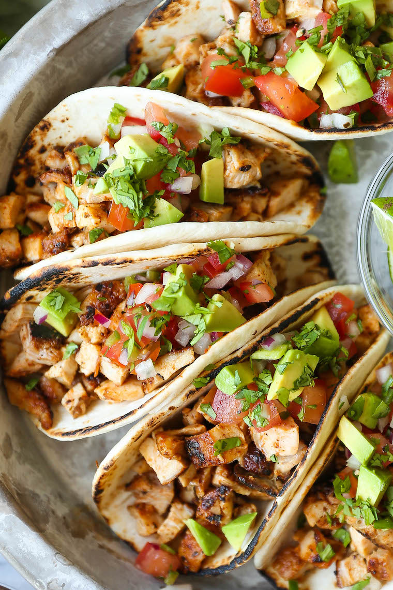

Homepage
Taco Night

Description
Taco night is a vital addition to any families recipe collection. This recipe utilizes a crock pot
to minimalize the work necessary in creating a delicious taco filling with shredded chicken and
your classic taco accessories.
Ingredients
- Boneless, skinless chicken breast
- Red Salsa; medium spiciness preferred
- Taco Seasoning
Steps
- Put the chicken breast in a slow-cooker with the salsa and some taco seasoning.
- Cook on low for 4 hours or high for 2 hours.
- When the chicken taco meat is done, use two forks to shred the chicken breasts.
- Put the shredded chicken back into the yummy juices that have collected in the
Crock-Pot, and voila! Your shredded chicken taco filling is ready to go!